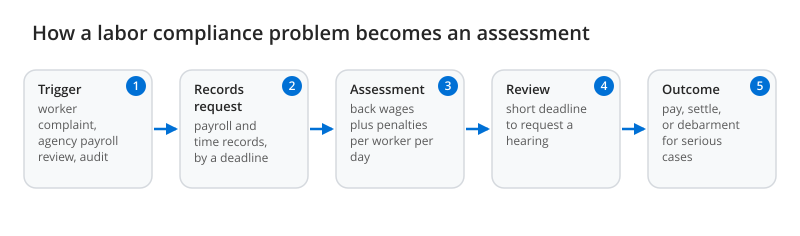

Labor compliance: audits and penalties
In one sentence: prevailing wage violations cost back wages plus per-worker, per-day penalties that add up fast, and the prime can be held responsible for its subs.

Who enforces
- The awarding agency reviews certified payroll and may withhold payments when records are missing or wrong.
- The Labor Commissioner's Office investigates complaints and reviews projects, and can issue a civil wage and penalty assessment against the contractor and its subs.
- Joint labor-management committees can request payroll records and sue to enforce.
- The Division of Apprenticeship Standards handles apprenticeship violations.
Penalties you should know
| Violation | Law | Penalty (per the statute) |
|---|---|---|
| Paying less than prevailing wage | Labor Code 1775 | Up to $200 per worker per calendar day; minimums of $40, $80 for a repeat within 3 years, $120 if willful, plus the unpaid wages |
| Not paying prevailing overtime | Labor Code 1813 | $25 per worker per day of violation |
| Late or missing payroll records after a request | Labor Code 1776 | $100 per day per worker until produced |
| Apprenticeship violations | Labor Code 1777.7 | Per-day penalties, and debarment for serious violations |
| Working or bidding unregistered | Labor Code 1771.1 | Penalties per day, up to a cap |
On top of these, liquidated damages equal to unpaid wages can apply if the wages aren't paid within the time allowed after an assessment. Repeated or willful violations can lead to debarment from public works for up to three years.
The prime's responsibility
The prime can be jointly liable for its subs' unpaid wages and some penalties, unless it took the steps the law describes to monitor them. Monitoring means: checking registration, collecting certified payroll, reviewing it, and acting on problems.
If you receive an assessment
There are short deadlines to request review. Call an attorney who handles prevailing wage cases the day it arrives.
Common mistakes / what agencies actually check
- Ignoring a records request because the job is finished.
- Paying back wages to settle without checking the penalty math.
- Not monitoring sub payroll and then sharing liability for it.